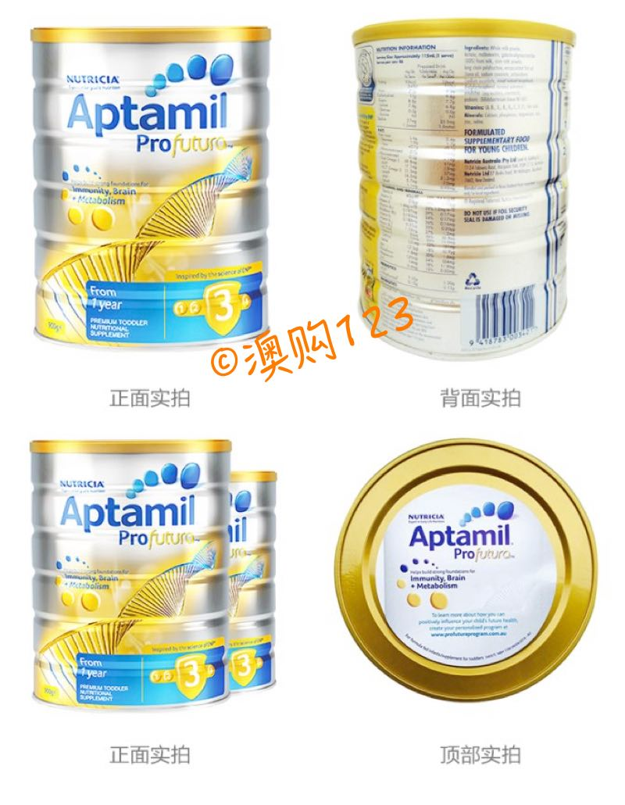
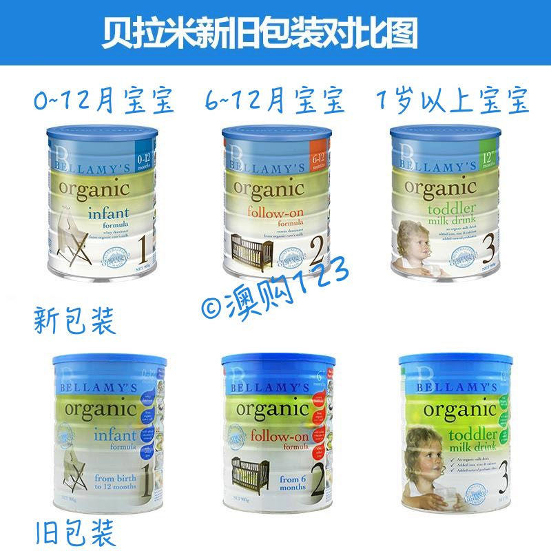

奶粉
奶粉粉质细腻、口感清淡香醇, 有效增加宝宝的抵抗力和肠胃消化功能. 可以帮助幼儿的消化和免疫系统健康成长。还有包含Omega 3、DHA的鱼油成分促进幼儿眼睛、大脑和神经系统的成长。一杯成长奶粉含有25-50%每天所需吸收的16种矿物质及维生素。独有增 强免疫配方，全面提升宝宝的抵抗能力!
适用人群
婴儿
奶粉官网
http://www.aptanutrition.com.au/
https://www.bellamysorganic.com.au/
https://a2nutrition.com.au/